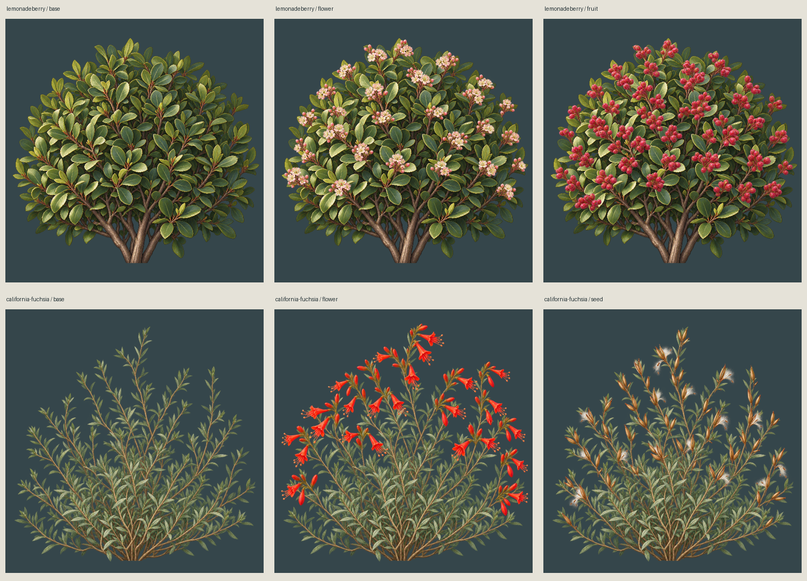

Independent seasonal overlays on unchanged standing bases. Interactive static review; no animation or wind simulation.

Per-flower attachment rigs and final-size botanical review remain open. Faint alpha-1 overlay residue is documented.